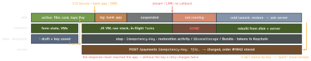

ios-platform · folio
In one line: A backgrounded app is suspended, and a suspended app can be killed without any callback (iOS jetsam, Android low-memory killer). When the user comes back it is a cold launch: everything in memory is gone, everything on disk / Keychain / restoration data survives — and the server may already have done the payment. So persist the screen and the draft before leaving, and make the operation idempotent so resuming can ask “did it happen?” instead of doing it twice.
Download PDF Print view LaTeX source


Ways an app dies
| kill | callback? | restore? |
|---|---|---|
| iOS jetsam (suspended) | none; applicationWillTerminate only if running in bg | yes: restoration data kept |
| iOS watchdog / crash | none | crash in restore → data discarded |
| user swipes app away | none reliable | no — user meant “quit” |
| Android process death (LMK) | none; onSaveInstanceState ran at onStop | yes: task + Bundles |
| Android config change | onDestroy + recreate | VM survives (not death) |
| reboot / OS / app update | none | disk only |
- iOS: the system relaunches into the saved scene; you rebuild it from
stateRestorationActivity/@SceneStorage(small UI state: ids, step, tab) + the draft on disk. Save onsceneDidEnterBackground, not inwillTerminate. - Android: the task and back stack come back; the top Activity is recreated from its Bundle and a new process —
Application.onCreateruns again, every singleton and static is fresh.SavedStateHandle/rememberSaveablehold ids; big data goes to disk (Bundle ≈ 1 MB Binder limit). - React Native: the JS VM is gone; the app boots JS from scratch at the initial route. Persist navigation state (React Navigation
initialState+onStateChange) and drafts yourself (AsyncStorage / MMKV; secrets in Keychain/Keystore). On Android, react-native-screens discards the restored fragment state (RNScreensFragmentFactory) to avoid crashes — so native restore will not bring your screens back.
What survives
| survives | lost |
|---|---|
files, DB, UserDefaults already written | objects, caches, singletons, JS state |
| Keychain / Keystore items | in-flight requests on a default session |
| restoration data, Bundles (system kill) | timers, Tasks, coroutines, listeners |
background URLSession transfers | “we’ll save it in willTerminate” |
| the server’s side of the request | the response you never received |
Test it — on purpose
- iOS: background the app, then Stop in Xcode (or
xcrun simctl terminate booted com.example.app), relaunch. Simulator Debug → Simulate Memory Warning tests warnings, not death. Swipe-away is not the test. - Android:
adb shell am kill com.example.appwhile in the background = real process death; Developer options Don’t keep activities only destroys Activities; Background process limit: none for soak testing. - Automate one UI test: fill the form, kill, relaunch, assert the draft.
Design checklist — a death-proof flow
- Every screen can be rebuilt from route + ids — no object handed over in memory that exists nowhere else.
- Drafts persisted on change (debounced), before leaving the app.
- Side-effecting calls carry an idempotency key; the server has a status endpoint for it.
- Session state re-hydrates lazily (token from Keychain, user from cache) — never “set by the login screen”.
- Restored ids validated; missing → a sane fallback screen.
- Drafts cleared on success, cancel and logout (privacy).
Example — a checkout that survives
struct CheckoutDraft: Codable {
var cartID: String, step: Int
var payKey: UUID? // set once, at "Pay"
}
@MainActor final class Checkout {
var draft: CheckoutDraft { didSet { store.save(draft) } }
func pay() async throws { // key saved BEFORE the call
let key = draft.payKey ?? UUID(); draft.payKey = key
try await api.pay(draft.cartID, idempotencyKey: key)
}
func resume() async throws { // on cold launch
guard let key = draft.payKey else { return }
switch try await api.paymentStatus(key) {
case .paid: route(.receipt); store.clear()
case .notFound, .failed: route(.pay) // safe to retry
case .pending: route(.waiting) }
} }<NavigationContainer // React Navigation
initialState={deepLink ? undefined : saved}
onStateChange={s => storage.set("nav", JSON.stringify(s))}>Payments and purchases
- Idempotency key: client makes one UUID per intent, persists it with the draft, sends it on every retry (
Idempotency-Keyon POST/PATCH); the server stores the result per key and replays it. On resume: query status, never blindly re-POST. - Server truth wins: order state comes from the server / webhook, not from “the app saw 200”. Redirect flows (3-D Secure, bank app) return via a universal link into a possibly cold app — the route must work from zero.
- StoreKit 2: a purchase interrupted by a kill is re-delivered through
Transaction.updates(listen from launch) until youfinish()it — grant content first, then finish.
Traps
- Relying on
applicationWillTerminate/onDestroy— not called on a system kill of a suspended app. - Restoring into a screen whose data is gone — validate ids, fall back.
- Relaunched in the background before first unlock:
.completefiles andWhenUnlockedKeychain items are unreadable. - Persisting RN nav state that crashes on restore — the user is stuck; reset it from an error boundary.
- Android: a singleton filled by the splash/login screen is
nullwhen the process is restored straight onto screen 3 — classic NPE.
Remember
Memory dies, disk lives, the server remembers. Save before you send; ask before you retry.